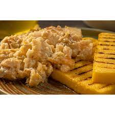

Baccalà alla vicentina (Cod Vicenza-style)
Description
Baccalà alla Vicentina, one of the most famous dishes from the city of Vicenza is a second course appreciated for its strong taste, perfect for cold weather.
The baccalà is a winter second course made of codfish, typical of the Region of Veneto. This recipe is based on codfish and olive oil that comes from a very long tradition, is one of the dishes that better characterizes the city of Vicenza.
Ingredients:
- 1 kg of dry stockfish
- 50/300 gr of onions
- 1/2 litre of extra virgin olive oil
- 3 salted sardines
- ½ litre of fresh milk
- a little white flour
- 50 gr of grated Parmesan cheese
- parsley
- salt and pepper

Steps:
- Soak well-bashed stockfish in cold running waterm changing it every 4 hours for 2 to 3 days.
- Remove part of the skin. Cut the fish alongside and remove the fishbone. Cut it in square pieces, making sure the size of each piece is more or less the same.
- Finely chop the onions and cook them in a small pan with a glass of oil until browned.
- Remove the salt and the bones from sardines, cut them into pieces and add them to the onions.
- Then, turn the fire off and add a tuft of chopped parsley.
- Flour the pieces of stockfish, sprinkle them with the onions and sardines browned in oil and place them one next to the other in a terracotta or aluminum pan, or in an oven dish (make sure you cover the bottom with a few spoons of onions and sardines browned in oil).
- Cover up the fish with the remaining part of the onions and the sardines browned in oil and add milk, grated mature cheese, salt and pepper.
- Add oil until you cover all the pieces, leveling them.
- Leave the pan on the fire for about 4 ½ hours, making sure you rotate it every now and then, without stirring. This cooking phase is also known as "pipare" in the local dialect. Only experience can tell you how long you have to cook the stockfish for, whose stiffness may differ from one fish to another.
- Serve piping hot with a slice of polenta, but it is also great after letting it rest for 12-24 hours.
Back to home